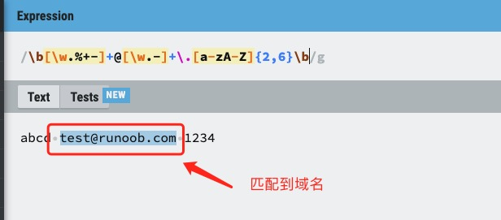

正規表現メタ文字
正規表現におけるメタ文字とは特別な意味を持つ文字で、文字通りの意味を表すのではなく、マッチングパターンを制御するために使用されます。
基本メタ文字
.(ドット)
-
改行文字（
\n）以外の任意の1文字にマッチ例：
a.b"aab", "a1b", "a b" などにマッチ
^(キャレット)
-
文字列の先頭位置にマッチ
-
例：
^abc"abc" で始まる文字列にマッチ
$(ドル記号)
-
文字列の末尾位置にマッチ
-
例：
xyz$"xyz" で終わる文字列にマッチ
\(バックスラッシュ)
-
エスケープ文字であり、後続の文字の特別な意味を無効にします
-
例：
\.任意の文字ではなく、実際のドットにマッチ
文字クラスのメタ文字
[](角括弧)
-
文字集合を定義し、その中の任意の1文字にマッチ
-
例：
[aeiou]任意の母音文字にマッチ
[^](否定文字クラス)
-
角括弧内にない任意の文字にマッチ
-
例：
[^0-9]任意の非数字文字にマッチ
-(ハイフン)
-
文字クラス内で範囲を表します
-
例：
[a-z]任意の小文字アルファベットにマッチ
量指定子のメタ文字
*(アスタリスク)
-
直前の部分式の0回以上の繰り返しにマッチ
-
例：
ab*c"ac", "abc", "abbc" などにマッチ
+(プラス記号)
-
直前の部分式の1回以上の繰り返しにマッチ
-
例：
ab+c"abc", "abbc" にマッチするが "ac" にはマッチしない
?(疑問符)
-
直前の部分式の0回または1回にマッチ
-
例：
colou?r"color" と "colour" にマッチ
{n}(中括弧)
-
正確にn回マッチ
-
例：
a{3}"aaa" にマッチ
{n,}
-
少なくともn回マッチ
-
例：
a{2,}"aa", "aaa" などにマッチ
{n,m}
-
n回からm回までマッチ
-
例：
a{2,4}"aa", "aaa", "aaaa" にマッチ
グループ化と選択のメタ文字
()(丸括弧)
-
部分式またはキャプチャグループを定義します
-
例：
(ab)+"ab", "abab" などにマッチ
|(縦棒)
-
「または」の関係を表します
-
例：
cat|dog"cat" または "dog" にマッチ
特殊文字クラスのメタ文字
\d
-
任意の数字にマッチ、等価:
[0-9]
\D
-
任意の非数字にマッチ、等価:
[^0-9]
\w
-
任意の単語文字（英字、数字、アンダースコア）にマッチ、等価:
[a-zA-Z0-9_]
\W
-
任意の非単語文字にマッチ、等価:
[^a-zA-Z0-9_]
\s
-
任意の空白文字（スペース、タブ、改行など）にマッチ
\S
-
任意の非空白文字にマッチ
境界マッチングのメタ文字
\b
-
単語の境界にマッチ
-
例：
\bcat\b"cat" にマッチするが "category" にはマッチしない
\B
-
非単語境界にマッチ
-
例：
\Bcat\B"scattered" の中の "cat" にマッチするが、単独の "cat" にはマッチしない
その他のメタ文字
\n
-
改行文字にマッチ
\t
-
タブ文字にマッチ
\r
-
復帰文字にマッチ
\f
-
フォームフィード文字にマッチ
\v
-
垂直タブ文字にマッチ
貪欲と非貪欲の量指定子
デフォルトでは、量指定子（*, +, ?, {}）は貪欲で、できるだけ多くの文字にマッチします。量指定子の後に?を付けると非貪欲（怠惰）モードになります：
-
*?：0回以上、ただしできるだけ少なく -
+?：1回以上、ただしできるだけ少なく -
??：0回または1回、ただしできるだけ少なく -
{n,m}?：n回からm回、ただしできるだけ少なく
例：<.*?>HTMLタグをマッチする際、タグをまたいでマッチしない
先読みと否定先読み
(?=...)(肯定先読み)
-
後に特定のパターンが続く位置にマッチ
-
例：
Windows(?=95|98)後に95または98が続く "Windows" にマッチ
(?!...)(否定先読み)
-
後に特定のパターンが続かない位置にマッチ
-
例：
Windows(?!95|98)後に95または98が続かない "Windows" にマッチ
(?<=...)(肯定後読み)
-
前に特定のパターンがある位置にマッチ
-
例：
(?<=95|98)Windows前に95または98がある "Windows" にマッチ
(?<!...)(否定後読み)
-
前に特定のパターンがない位置にマッチ
-
例：
(?<!95|98)Windows前に95または98がない "Windows" にマッチ
例
次に、メールアドレスにマッチする正規表現を分析します。下図の通り：
例
以下にマークされたテキストは、取得されたマッチの式です：
test@example.com

試してみる »

以下の表は、メタ文字の完全なリストと、正規表現のコンテキストでのそれらの動作を示しています：
| 文字 | 説明 |
|---|---|
| \ | 次の文字を特殊文字、リテラル文字、後方参照、または8進エスケープとしてマークします。例えば、'n' は文字 "n" にマッチします。'\n' は改行文字にマッチします。シーケンス '\\' は "\" にマッチし、"\(" は "(" にマッチします。 |
| ^ | 入力文字列の先頭位置にマッチします。RegExp オブジェクトの Multiline プロパティが設定されている場合、^ は '\n' または '\r' の後の位置にもマッチします。 |
| $ | 入力文字列の末尾位置にマッチします。RegExp オブジェクトの Multiline プロパティが設定されている場合、$ は '\n' または '\r' の前の位置にもマッチします。 |
| * | 直前の部分式に0回以上マッチします。例えば、zo* は "z" および "zoo" にマッチします。* は {0,} と等価です。 |
| + | 直前の部分式に1回以上マッチします。例えば、'zo+' は "zo" および "zoo" にマッチしますが、"z" にはマッチしません。+ は {1,} と等価です。 |
| ? | 直前の部分式に0回または1回マッチします。例えば、"do(es)?" は "do" または "does" にマッチします。? は {0,1} と等価です。 |
| {n} | n は非負の整数です。正確に n 回マッチします。例えば、'o{2}' は "Bob" の中の 'o' にはマッチしませんが、"food" の中の2つの o にはマッチします。 |
| {n,} | n は非負の整数です。少なくとも n 回マッチします。例えば、'o{2,}' は "Bob" の中の 'o' にはマッチしませんが、"foooood" の中のすべての o にはマッチします。'o{1,}' は 'o+' と等価です。'o{0,}' は 'o*' と等価です。 |
| {n,m} | m と n はともに非負の整数で、n <= m です。少なくとも n 回、最大で m 回マッチします。例えば、"o{1,3}" は "fooooood" の中の最初の3つの o にマッチします。'o{0,1}' は 'o?' と等価です。カンマと2つの数の間にスペースを入れてはいけないことに注意してください。 |
| ? | この文字が他の任意の量指定子 (*, +, ?, {n}, {n,}, {n,m}) の直後に続く場合、マッチングパターンは非貪欲になります。非貪欲モードは検索対象の文字列にできるだけ少なくマッチし、デフォルトの貪欲モードはできるだけ多くマッチします。例えば、文字列 "oooo" に対して、'o+?' は単一の "o" にマッチし、'o+' はすべての 'o' にマッチします。 |
| . | 改行文字（\n、\r）を除く任意の1文字にマッチします。'\n' を含む任意の文字にマッチするには、次のような"(.|\n)"のパターンを使用してください。 |
| (pattern) | パターンにマッチし、そのマッチを取得します。取得されたマッチは、生成された Matches コレクションから得られます。VBScript では SubMatches コレクションを使用し、JScript では $0…$9 プロパティを使用します。丸括弧の文字にマッチするには、'\(' または '\)' を使用してください。 |
| (?:pattern) | パターンにマッチしますが、マッチ結果は取得しません。つまり、これは非取得マッチであり、後で使用するために保存されません。これは「または」文字 (|) を使ってパターンの各部分を組み合わせる場合に有用です。例えば、'industr(?:y|ies)' は 'industry|industries' よりも簡潔な式です。 |
| (?=pattern) | 正の先読み（look ahead positive assert）。pattern にマッチする任意の文字列の開始位置で検索文字列にマッチします。これは非取得マッチです。つまり、そのマッチは後で使用するために取得する必要はありません。例えば、「Windows(?=95|98|NT|2000)」は「Windows2000」の中の「Windows」にマッチしますが、「Windows3.1」の中の「Windows」にはマッチしません。先読みは文字を消費しません。つまり、マッチが発生した後、次のマッチの検索は、先読みを含む文字の後からではなく、最後のマッチの直後から開始されます。 |
| (?!pattern) | 正の否定先読み（negative assert）。pattern にマッチしない任意の文字列の開始位置で検索文字列にマッチします。これは非取得マッチです。つまり、そのマッチは後で使用するために取得する必要はありません。例えば、「Windows(?!95|98|NT|2000)」は「Windows3.1」の中の「Windows」にマッチしますが、「Windows2000」の中の「Windows」にはマッチしません。先読みは文字を消費しません。つまり、マッチが発生した後、次のマッチの検索は、先読みを含む文字の後からではなく、最後のマッチの直後から開始されます。 |
| (?<=pattern) | 後読み（look behind）肯定アサーション。正の先読みと似ていますが、方向が逆です。例えば、"(?<=95|98|NT|2000)Windows"マッチします"2000Windows"の中の"Windows"、しかしマッチできません"3.1Windows"の中の"Windows"。 |
| (?<!pattern) | 後読み（look behind）否定アサーション。正の否定先読みと似ていますが、方向が逆です。例えば"(?<!95|98|NT|2000)Windows"マッチします"3.1Windows"の中の"Windows"、しかしマッチできません"2000Windows"の中の"Windows"。 |
| x|y | x または y にマッチします。例えば、'z|food' は "z" または "food" にマッチします。'(z|f)ood' は "zood" または "food" にマッチします。 |
| [xyz] | 文字集合。含まれる任意の 1 文字にマッチします。例えば、'[abc]' は "plain" の中の 'a' にマッチします。 |
| [^xyz] | 否定文字集合。含まれない任意の文字にマッチします。例えば、'[^abc]' は "plain" の中の 'p'、'l'、'i'、'n' にマッチします。 |
| [a-z] | 文字範囲。指定された範囲内の任意の文字にマッチします。例えば、'[a-z]' は 'a' から 'z' までの範囲内の任意の小文字アルファベット文字にマッチします。 |
| [^a-z] | 否定文字範囲。指定された範囲内にない任意の文字にマッチします。例えば、'[^a-z]' は 'a' から 'z' までの範囲内にない任意の文字にマッチします。 |
| \b | 単語境界にマッチします。つまり、単語と空白の間の位置です。例えば、'er\b' は "never" の中の 'er' にマッチしますが、"verb" の中の 'er' にはマッチしません。 |
| \B | 非単語境界にマッチします。'er\B' は "verb" の中の 'er' にマッチしますが、"never" の中の 'er' にはマッチしません。 |
| \cx | x で指定される制御文字にマッチします。例えば、\cM は Control-M または復帰文字にマッチします。x の値は A-Z または a-z のいずれかでなければなりません。それ以外の場合は、c をリテラル文字 'c' として扱います。 |
| \d | 数字文字にマッチします。[0-9] と同等です。 |
| \D | 非数字文字にマッチします。[^0-9] と同等です。 |
| \f | フォームフィード（改ページ）文字にマッチします。\x0c および \cL と同等です。 |
| \n | 改行文字にマッチします。\x0a および \cJ と同等です。 |
| \r | 復帰文字にマッチします。\x0d および \cM と同等です。 |
| \s | スペース、タブ、フォームフィードなどを含む任意の空白文字にマッチします。 [ \f\n\r\t\v] と同等です。 |
| \S | 任意の非空白文字にマッチします。[^ \f\n\r\t\v] と同等です。 |
| \t | タブ文字にマッチします。\x09 および \cI と同等です。 |
| \v | 垂直タブ文字にマッチします。\x0b および \cK と同等です。 |
| \w | アルファベット、数字、アンダースコアにマッチします。'[A-Za-z0-9_]' と同等です。 |
| \W | アルファベット、数字、アンダースコア以外にマッチします。'[^A-Za-z0-9_]' と同等です。 |
| \xn | n にマッチします。ここで n は 16 進エスケープ値です。16 進エスケープ値は必ず 2 桁の長さでなければなりません。例えば、'\x41' は "A" にマッチします。'\x041' は '\x04' & "1" と同等です。正規表現では ASCII エンコーディングを使用できます。 |
| \num | num にマッチします。ここで num は正の整数です。取得されたマッチへの後方参照です。例えば、'(.)\1' は連続する同じ 2 文字にマッチします。 |
| \n | 8 進エスケープ値または後方参照を表します。\n の前に少なくとも n 個の取得済み部分式がある場合、n は後方参照です。それ以外の場合、n が 8 進数字 (0-7) ならば、n は 8 進エスケープ値です。 |
| \nm | 8 進エスケープ値または後方参照を表します。\nm の前に少なくとも nm 個の取得済み部分式がある場合、nm は後方参照です。\nm の前に少なくとも n 個の取得がある場合、n は文字 m が続く後方参照です。前述の条件がどれも満たされない場合、n と m が両方とも 8 進数字 (0-7) であれば、\nm は 8 進エスケープ値 nm にマッチします。 |
| \nml | n が 8 進数字 (0-3) であり、m と l が両方とも 8 進数字 (0-7) である場合、8 進エスケープ値 nml にマッチします。 |
| \un | n にマッチします。ここで n は 4 つの 16 進数字で表される Unicode 文字です。例えば、\u00A9 は著作権記号 (?) にマッチします。 |